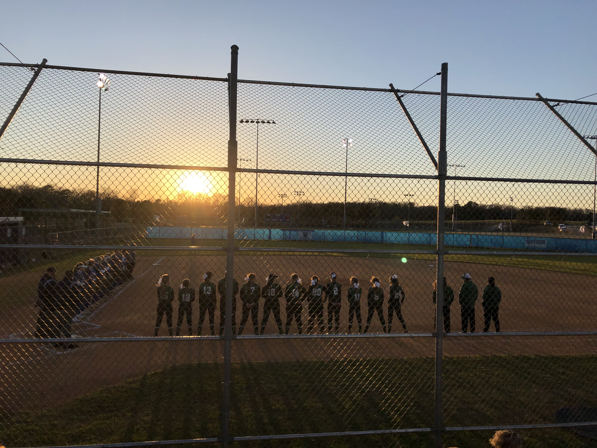

Get to know Elizabeth Goodwin
bio
I was born and raised in Easley, SC so I am not too far from home. I have one younger sister and two loving parents. In high school I played three sports (tennis, basketball, softball).
Professional Life
During my junior year of high school. Covid-19 hit; this gave me the opportunity to get a job. I began working at Publix Supermarket. I benefited through this job greatly because I learned a plethora of customer service skills. I left this job when I came to college. My freshmen year I did not have a job so I could focus on school. Last summer, I worked at my local country club as a cart attendant. I learned what it was like working in a different type of sport than what I am used to. I would wash golf carts, check members in for tee times, set up and take down the range. Last semester I decided to get a job with Elon Athletic Marketing. I have learned a lot through working my first student job in athletics.